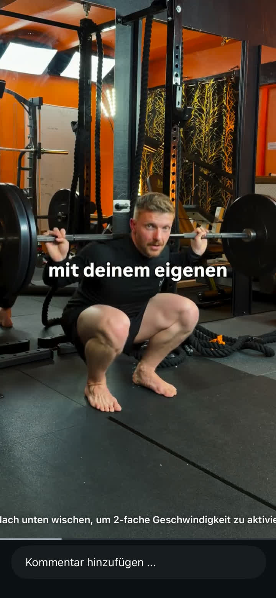

Dein Knie.
Schritt für Schritt.
Beschwerden einordnen, Zusammenhänge verstehen und passende Übungen auswählen.
Zuerst die Beschwerden einordnen
Wo, seit wann und bei welcher Bewegung?
Bei Knieschmerzen würde ich zuerst schauen: Wo genau tut es weh, seit wann und bei welchen Bewegungen? Gab es eine Verletzung oder zuletzt deutlich mehr Belastung?
Danach würde ich Fuß, Knie und Hüfte gemeinsam betrachten. Die Reihenfolge von unten nach oben hilft beim Überblick – sie bedeutet aber nicht, dass die Ursache automatisch im Fuß liegt. Ein solcher Selbstcheck gibt Hinweise, ersetzt jedoch keine Untersuchung.
Beim Fuß und Sprunggelenk anfangen
Funktion vor Form.
Beim Fuß würde ich nicht nur auf das Fußgewölbe schauen, sondern vor allem auf die Funktion: Gibt es Schmerzen, fühlt sich der Stand sicher an und lässt sich das Sprunggelenk gut bewegen? Ein Senk- oder Plattfuß kann die Belastung und Bewegung im Bein beeinflussen und dadurch Beschwerden bis ins Knie und darüber hinaus, etwa an der Hüfte, begünstigen. Das ist jedoch nicht bei jedem Senk- oder Plattfuß der Fall.
Bei festgestellten Kraftdefiziten können Fußmuskelübungen und langsames Fersenheben sinnvoll sein: mit leichtem Festhalten auf die Zehenspitzen hochgehen und kontrolliert wieder absenken. Fehlt Beweglichkeit im Sprunggelenk, würde ich zusätzlich gezielt daran arbeiten, beispielsweise mit einer sanften Wadendehnung.
Fußübungen & Wadenbeweglichkeit
Short Foot, Zehengreifen, Fußsohlenmassage und Wadenstretch.
Am Knie Kraft und Belastbarkeit anschauen
Mit einer gut verträglichen Bewegung beginnen.
Am Knie würde ich beobachten, wie sich einfache Bewegungen anfühlen: Kann ich das Bein gut beugen und strecken oder langsam von einem Stuhl aufstehen? Schmerzen bedeuten nicht automatisch, dass das Knie muskulär instabil ist.
Je nach Ursache und Belastbarkeit können kontrolliertes Aufstehen und Hinsetzen oder langsames Beinstrecken im Sitzen passende Einstiegsübungen sein. Ich würde mit einer gut verträglichen Bewegung beginnen und nicht versuchen, schmerzhafte Wiederholungen zu erzwingen.
Übungen rund ums Knie
Eine Sammlung mit Wandsitz und weiteren Beinübungen.
Knieübungen mit und ohne Band
Unter anderem Wandsitz und Spanish Squats mit einem Band.
Hüfte und Gesäß einbeziehen
Bewegungskontrolle beobachten.
An der Hüfte würde ich schauen, ob ich im Einbeinstand mein Becken ungefähr waagerecht halten kann – bei Bedarf mit einer Hand zur Sicherung. Schwierigkeiten dabei sind ein Hinweis auf die Bewegungskontrolle, aber noch keine Diagnose.
Für die Hüft- und Gesäßmuskulatur kommen beispielsweise Beckenheben in Rückenlage oder seitliches Beinheben infrage. Gerade bei Schmerzen rund um die Kniescheibe kann Hüfttraining eine sinnvolle Ergänzung zum gezielten Knietraining sein.
Fuß, Knie & Hüfte in Bewegung
Beispiele zum Zusammenspiel der Beine und zur Kontrolle im Einbeinstand.
Kontrolle in der Kniebeuge
Eine anspruchsvolle Kniebeugenvariante mit Festhalten.
Aus den Beobachtungen passende Übungen auswählen
Wenige passende Übungen. Schrittweise steigern.
Ich würde nicht wahllos alles trainieren, sondern wenige passende Übungen auswählen: Kraft verbessern, wo sie fehlt, Bewegungskontrolle üben, wo Bewegungen schwerfallen, und Beweglichkeit verbessern, wo sie tatsächlich eingeschränkt ist.
Für geeignete Kraftübungen wäre ein vorsichtiger Einstieg beispielsweise zweimal pro Woche mit ein bis zwei Sätzen à acht bis zwölf Wiederholungen. Ist das zu viel, würde ich niedriger anfangen. Erst wenn es gut verträglich ist, würde ich Wiederholungen oder Widerstand schrittweise erhöhen.
Spätestens am nächsten Morgen sollten die Beschwerden wieder auf dem Ausgangsniveau sein – sonst die Belastung reduzieren.
Trainingsbeispiele für Fortgeschrittene
ATG Split Squats, Step-downs und Copenhagen Planks.
Weitere Kraft- & Belastungsvarianten
Verschiedene Übungen mit Zusatzgewicht und großer Kniebeugung.
Zusätzliches Bild: tiefe Kniebeuge mit Langhantel +

Dehnen ergänzen und Grenzen beachten
Gezielt dehnen. Beschwerden ernst nehmen.
Dehnen würde ich gezielt einsetzen, etwa bei eingeschränkter Beweglichkeit durch eine gespannte Waden- oder Oberschenkelmuskulatur – nicht pauschal überall und nicht in den Gelenkschmerz hinein. Gleichzeitig würde ich schmerzauslösende Alltags- oder Sportbelastungen vorübergehend anpassen.
Bei anhaltenden oder wiederkehrenden Beschwerden sollte die Übungsauswahl ärztlich oder physiotherapeutisch überprüft werden.
Ein stark geschwollenes oder blockiertes Knie, fehlende Belastbarkeit oder ein heißes, gerötetes Knie mit Fieber gehören dringend ärztlich abgeklärt.